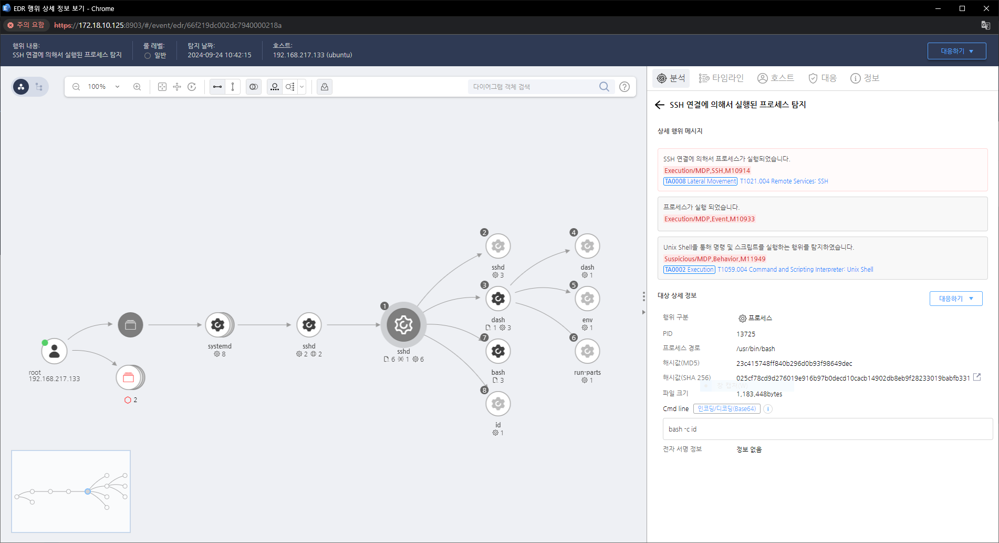

MITRE ATT&CK 액션을 기준으로 대응 방안을 작성
Action = "Network-SendPacket" AND Protocol = "SSH"

공격자에 의해 PC가 제어되었을 가능성이 있으므로 호스트 네트워크를 격리합니다.
강력한 인증 사용 (M1032 - Multi-factor Authentication):
원격 데스크톱 접근 제한 (M1026 - Privileged Account Management):
네트워크 레벨 인증(NLA) 활성화 (M1042 - Disable or Remove Feature or Program):
포트 사용 제한 (M1030 - Network Segmentation):
정책 기반 차단 (M1054 - Software Configuration):
로그 및 모니터링 (M1049 - Audit):
최신 보안 패치 적용 (M1051 - Update Software):
Action 실행시 함꼐 영향을 받는 다른 Techniqes
| ATT&CK |
|---|
| T1021.004 |
| D3FEND |
|---|
| D3-NTF Network Traffic Filtering |
| D3-ITF Inbound Traffic Filtering |
| D3-OTF Outbound Traffic Filtering |